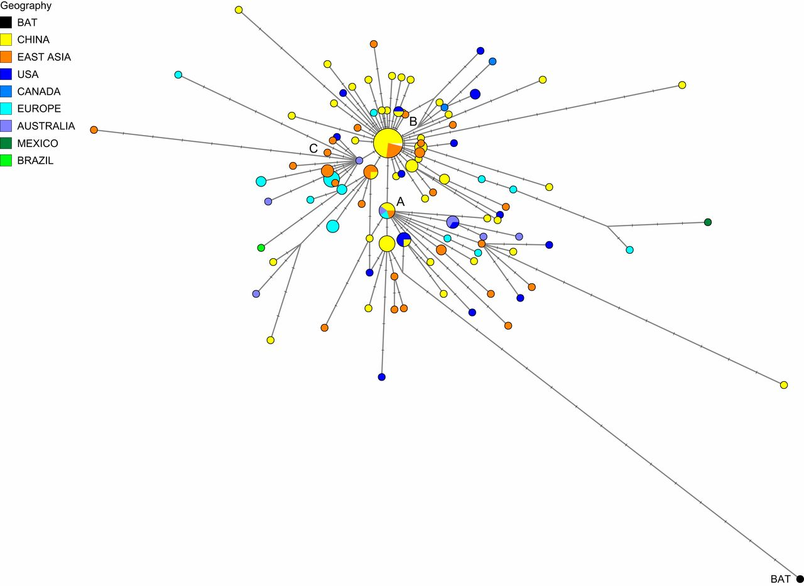

As testing becomes widespread around the world, more and more data is available for so-called “phylogenetic” analyses, which allow us to reconstruct the temporal evolution of Covid-19 within human populations by analyzing the mutations that gradually appear in its genome. It is a way of reconstructing the virus’s family tree a posteriori, assuming that each new mutation constitutes a new, well-identifiable “branch.”
These new analyses suggest that the scenario is probably not as simple as it first seemed, and it is premature to place the moral burden of the epidemic on China’s shoulders. Given the current scientific data, media and political spheres should exercise caution on this sensitive issue, especially as diplomatic tensions escalate.
To recap, the scenario of an initial emergence in Wuhan is based on two main facts:
● The genome of Covid-19 is very close to the genome of a virus named BatCov-RatG13, which infected a bat analyzed at the Wuhan Institute of Virology. However, the bat in question was captured in 2013 in a cave in Yunnan province, located more than 1000 kilometers away.
● Among the first recorded cases, a large majority had visited the wild animal market in Wuhan. However, the first patient who tested positive had never visited the market in question.
Despite Appearances
While the consensus lasted for almost three months, it is now being challenged by several phylogenetic studies suggesting that the viral strain that spread in Wuhan is not the original source of the virus, or that it represents just one possible source among others.
Before delving into the subject, it must be emphasized that none of these studies question the idea that the virus originated from a bat. In fact, the bat virus initially analyzed in Wuhan is even used as a reference point in several analyses, with the goal of tracing the virus’s path from its closest known animal relative.
The first study casting doubt on the pandemic’s origin comes from a report published by the “Bulletin of the World Health Organization” on February 24 by IBM researchers in the United States. It warns of the existence of three branches, the oldest of which includes a group of patients:
● who had no contact with the Wuhan market.
● who travel a lot
● who are of various nationalities
● who were infected by a variant spreading more slowly than the others
On March 5, another Sino-American study published on Medrxiv reached a similar conclusion. In this study, three strains are identified and — again — the strain closest to BatCov-RatG13 is not the one found in Wuhan, but a strain initially detected in Japan, the USA, Australia, and other Chinese provinces far from Wuhan.
Wuhan, Only an Intermediate Step?
On April 8, finally, English and German researchers published the phylogenetic analysis of 160 virus genomes in the American journal PNAS. Collected from all over the world, these genomes are very similar to each other, but there are still variations allowing the distinction of three main strains, A, B, and C.
Since the vast majority of the cases initially recorded in Wuhan belong to group B, the group B variants should be the closest to the BatCov-RatG13 strain (if the first human-animal contagion really took place in this city). However, this is not the case. In reality, the variants closest to the bat virus are those of group A, found in southern China (near Hong Kong), Japan, and the United States. Group C, finally, is the one that hit Europe hardest and seems to have emerged only in a third phase, following a mutation within group B.

Interviewed by the Chinese television channel CGTN, Peter Forster from the University of Cambridge and the first author of the study is adamant: despite appearances, it is too early to say that the pandemic originated in Wuhan, China (see the interview in English, here).
While these studies could be partially challenged by the discovery of a virus even closer to Covid-19 than its current cousin, BatCov-RatG13, they remind us that the exact origins of the pandemic remain a mystery. If Wuhan is not the initial epicenter, where should we now look for patient zero?
The Mystery Deepens
Given the proximity between Covid-19 and BatCov-RatG13, the main hypothesis remains that the first human-animal contagion occurred in China, possibly in Yunnan province. In this case, the Chinese patient zero would have directly or indirectly infected a few travelers of various nationalities before the virus mutated and spread rapidly in Wuhan and then around the world.
However, other hypotheses cannot be ruled out. Since 2002, the possibility of a new coronavirus-related epidemic has motivated some research institutes to work on the threat. The first SARS epidemic broke out in China, and many samples were collected to isolate the viruses circulating in Chinese bats, with many institutes receiving these samples worldwide.
Once in these laboratories, these viruses are cultured to allow researchers to study their properties in detail. Depending on the question, cultures are conducted on either bat or human lung cells or on living animals, such as primates or mice. In some P3 or P4 laboratories, these natural viruses are even directly modified to make them more aggressive — an approach that sparked significant controversy a few years ago.
Despite the claims of Prof. Montagnier, readily relayed by far-right media, we know with near certainty that Covid-19 was never modified in a laboratory. However, nothing excludes that it may have been cultured in vitro, an hypothesis acknowledged as possible in the most serious scientific publications (see for example this article published in Nature Medicine). This type of research can inadvertently lead to the selection of viruses better able to infect human cells through a passive mechanism of “passage selection.”
Although the hypothesis remains unlikely, it is not excluded that Covid-19 emerged from a research laboratory, due to human error or equipment failure. If this were the case, patient zero could be Chinese, French, or American.
International Tensions
In this regard, it is obviously the Wuhan Institute of Virology — recently equipped with a P4 laboratory thanks to French support — that has been the subject of the first suspicions. Persevering in his strategy of stigmatizing China, Trump even suggested in a press conference that his administration is currently exploring this conspiracy-theorist favorite.
However, given recent events, the Chinese ambassador to France may not be entirely wrong, despite his critics: it might be more appropriate to turn to the United States if considering the hypothesis of a laboratory escape. Indeed, in August 2019, a major security breach led to the abrupt closure of many sensitive activities at Fort Detrick, a major hub of the American military’s biodefense research. The sterilization process for waste produced by this research center working on the world’s most dangerous viruses malfunctioned following a 2018 flood, implying that a virus leak could have occurred. Indicating the severity of the event, partial resumption only took place on December 7, 2019, just before the pandemic began. The center only became fully operational again this month. In other words, P4 labeling is not synonymous with infallibility, and the latest example comes from the United States.
In any case, as tensions rise and while awaiting further data, it would be prudent for journalists and politicians to adopt a more nuanced perspective on the virus’s origin. With nearly a million Chinese citizens or immigrants on its soil, France cannot afford to fall with Trump into stigmatizing China. This stance is all the more condemnable as phylogenetic analyses cast doubt on the true origins of the pandemic.
Without providing definitive answers.